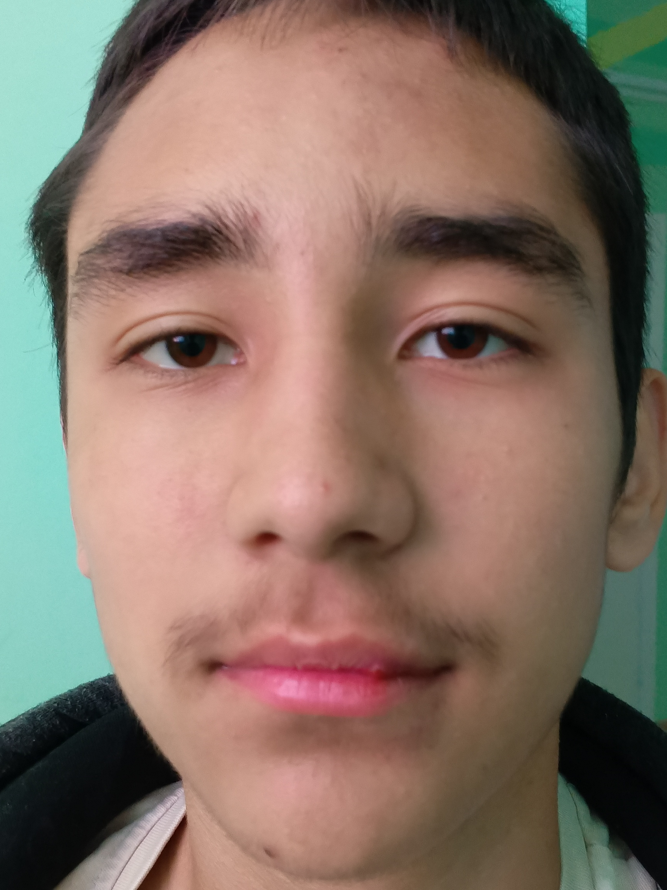
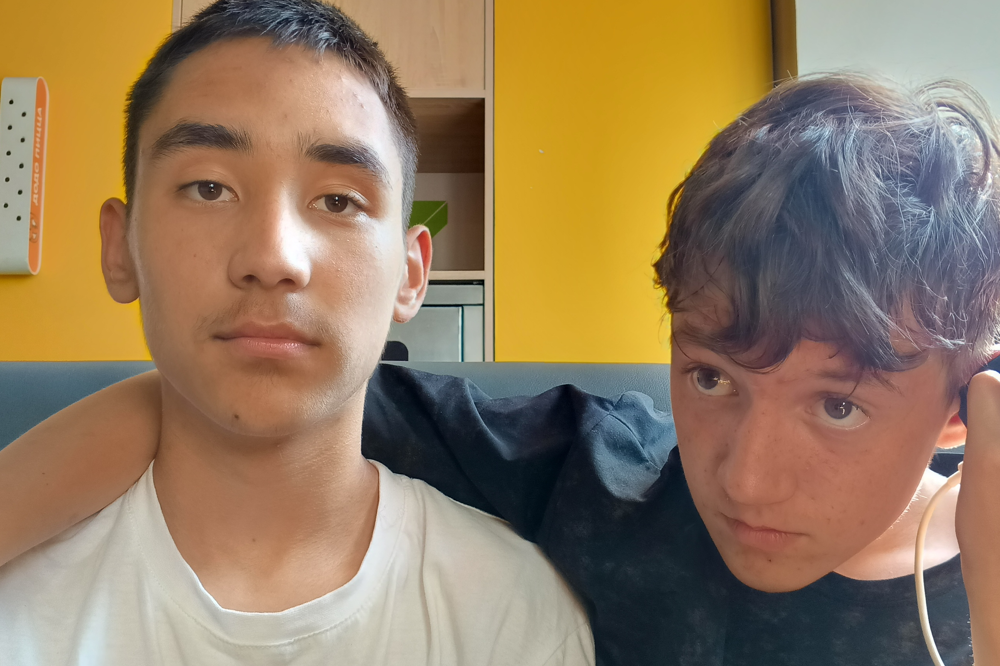
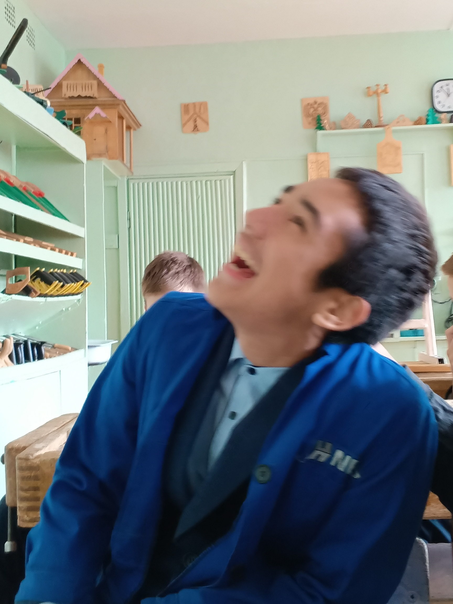
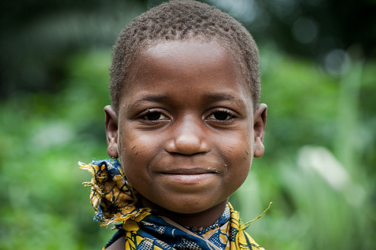

История Ильяса
Ильяс – человек, чья жизнь и работа тесно связаны с африканским наследием. Родившись в семье, которая хранила традиции своих предков, он с детства впитывал культурные ценности Африки.
Вдохновленный великими африканскими лидерами, такими как Нельсон Мандела и Томас Санкара, Ильяс посвятил свою жизнь продвижению африканской культуры.



Родина
Африка – это колыбель цивилизации. Именно здесь родились древние империи – Мали, Гана, Сонгай, Куш. Эти великие царства оставили после себя бесценное наследие.
Спасибо за помощь
Ильяс был успешным игроком в онлайн-казино, зарабатывая миллионы на ставках. Он решил помочь бедным регионам Африки.
